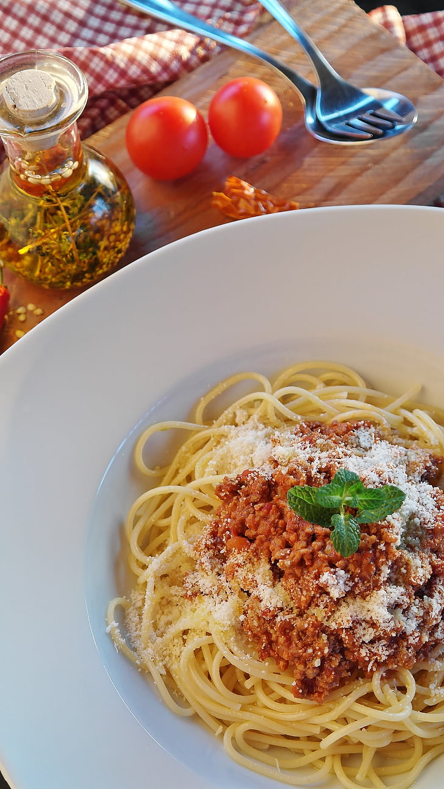

Pasta Bolognese

A quick, easy, and tasty pasta bolognese dish. This recipe serves 4 people with a preparation time of 1 hr 15 mins.
Ingredients:
- 500 g beef mince
- 1 medium onion, chopped
- 1 small green capsicum, diced
- 4 garlic cloves, minced
- 400 g cans diced tomatoes
- 500 g passata
- 170 g tomato paste
- 2 tsp dried oregano
- 2 tsp dried basil
- 1 tsp salt
- ½ tsp ground black pepper
Steps
- Gather all ingredients
- Combine ground beef, bell pepper, onion, and garlic in a large sauce pan over medium-high heat
- Cook and stir until meat is browned and crumbly and vegetables are tender, 5 to 7 minutes
- Drain grease then stir in diced tomatoes, tomato sauce, and tomato paste into the mixture
- Season with oregano, basil, salt, and black pepper
- Simmer sauce for 1 hour, stirring occasionally
- Serve hot and enjoy
Home